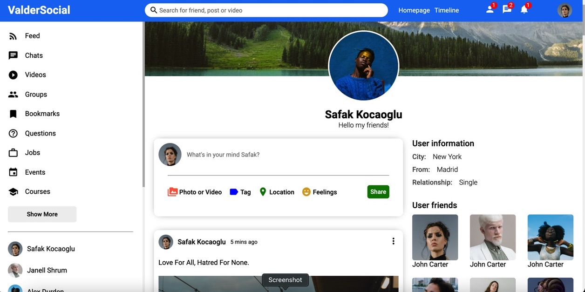
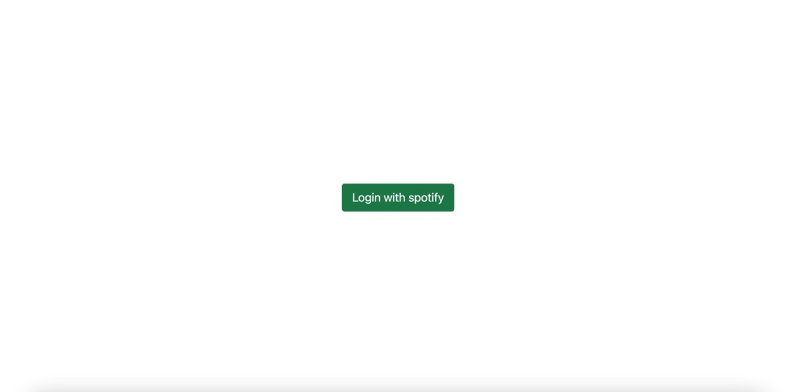
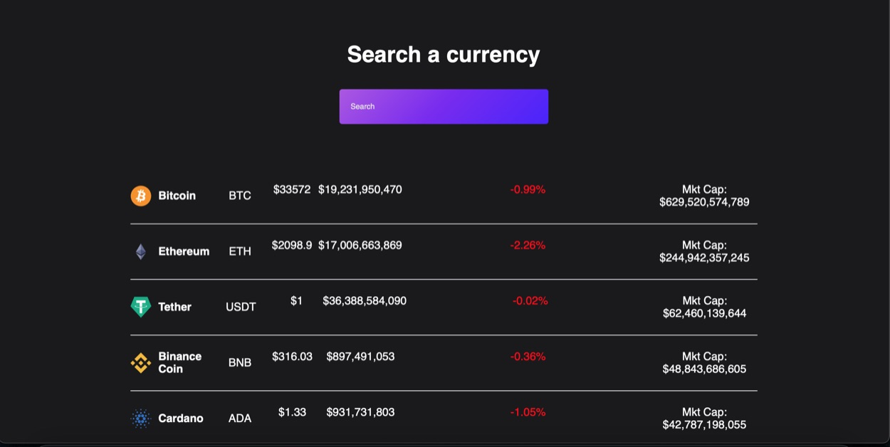
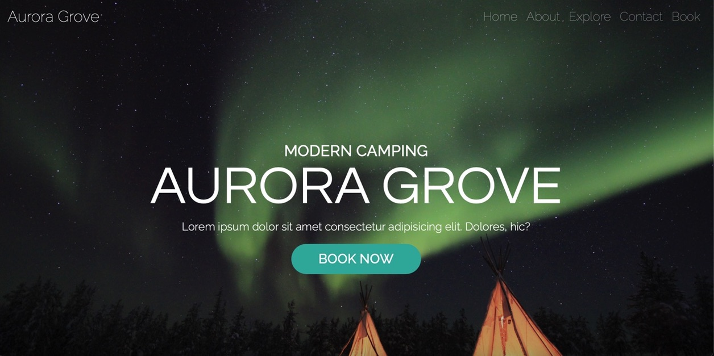
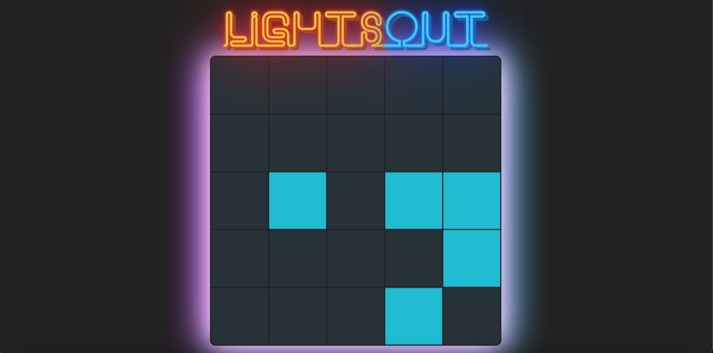
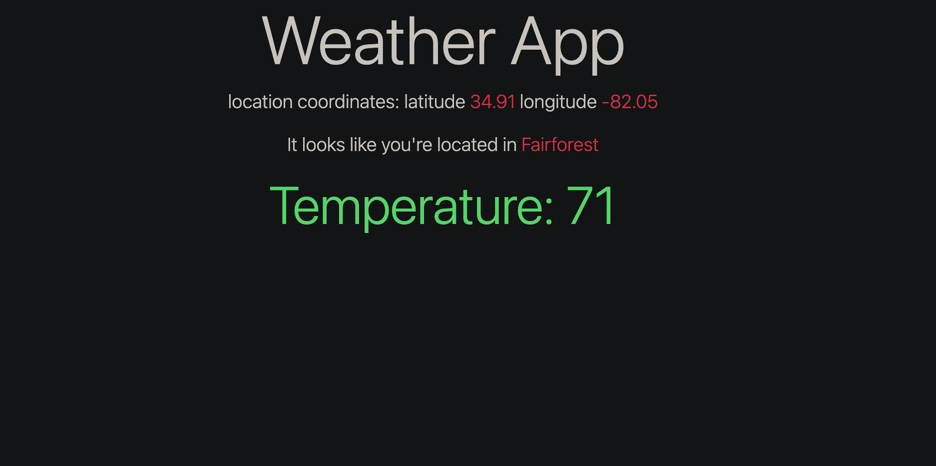

Software Engineer with expertise in full-stack devlopment, AWS, Python, SQL, and big data systems. Experienced in building scalable, efficient web applications and data-driven solutions. Fueled by curiosity and continuous learning, I am passionate about solving complex problems and creating software that makes a meaningful impact on people's lives. Outside of work, I enjoy reading, playing chess, and running.
Projects

ValderSocial
Full stack social media app which allows users to create an account, upload posts with pictures and interact with other users.
Built with React / ContextAPI on frontend, Node and Express on the backend and MongoDB Atlas for the database.

Dotify
A Spotify inspired web application that allows users to play music of their choosing as well as displaying the lyrics of the track.
Built with React and MaterialUI on the frontend. Built with Node and Express on the backend and to handle routing. Used Axios to fetch data from the Spotify API and Lyrics API.

Cyrpto Track
Users are able to search for their desired currency and look at various financial data such as price, marketcap, and price movment of asset.
Built using React functional based components and used Axios to fetch data from the Coingecko API.

Travel Landing page
Fully responsive landing page for Airbnb inspired travel service
Built with Javascript, HTML, CSS, SASS, and Bootstrap.

Lights Out game
Based on the popular puzzle game composed of a grid of 5 by 5 squares.
Built with React and also used Codepen for CSS.

Weather App
Locates the users coordinates to provide weather and location information
Implemented location and weather information using Open Weather API and JavaScript functions that fetch the longitude and latitude coordinates of the client from the backend.
Get In Touch
Feel free to reach out to me via email or phone. I look foward to hearing from you!


{kind=link}
{kind=link}
{kind=link}
{kind=link}
{kind=link}
{kind=link}